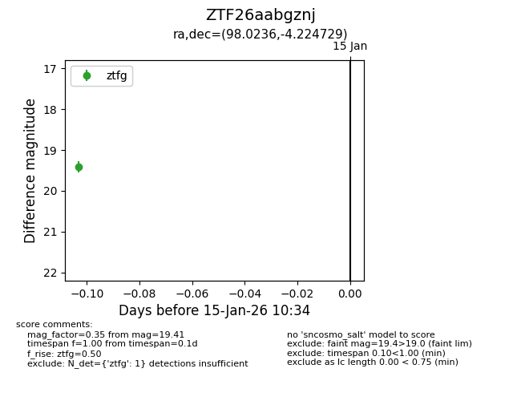
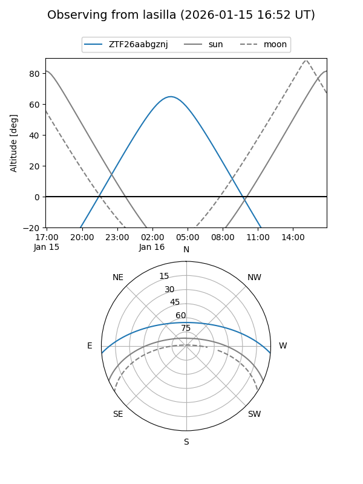
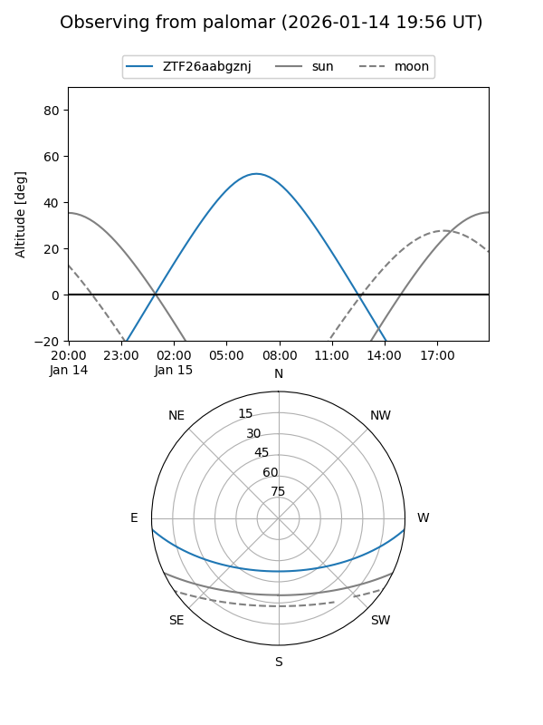

ZTF26aabgznj
Target ZTF26aabgznj at 2026-01-15 10:35
Aliases and brokers:
FINK: link
Lasair: link
ALeRCE: link
alt names
ZTF26aabgznj (ztf,fink_ztf)
Coordinates:
equatorial (ra, dec) = 98.0236,-4.22473
equatorial (HMS+DMS) = 06:32:05.66,-04:13:29.02
galactic (l, b) = (214.5014,-6.22401)
Flags:
Photometry:
last ztfg=19.41
1 ztfg detections
Lightcurve

Visibility


Additional plots